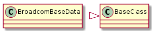

I have decided to break the commands sent to the Broadcom into smaller actions. If they are run separately this will actually make them inefficient time-wise, as you need to put about a half-second pause between each call to the server or it will occasionally not respond, but my guess is that I will not have access to the Broadcom again for a while and this might turn into a code-maintenance nightmare if things aren’t broken down. To ameliorate the knowledge-gain, knowledge-lost cycle I am trying to make the broadcom-specific part of the code as simple as possible at the possible expense of execution efficiency. Of course, one could argue that an explosion of classes does not simplify anything but I am hopeful that once the pattern of implementation is recognized only the relevant classes need be found and examined and so smaller will be better.
To allow for the aggregation of commands each command class implements the + operation which will allow other commands to be added to their data-dictionary. This way the Apply action only needs to be called once per page. There are too many things on the pages for me to check if they make sense, though, so user-beware.
A hypothetical example – setting the 2.4 GHz channel and disabling the 5 GHz channel:
connection = HTTPConnection('192.168.1.1', password='admin', path='radio.asp')
set_channel = Set24GHzChannel(connection)
disable = Disable5GHz(connection)
set_channel += disable
set_channel('11')
This should have the equivalent effect of:
set_channnel('11')
disable()
But the second case will access the server twice (once to set the channel, once to disable the 5 GHz interface) while the first case only accesses the server once it should be faster. Also, if you want to remove commands (in this case the disable data) from the set_channel data you can use:
set_channel -= disable
With this simple example it would probably be better to re-create the set_channel instead of removing the disable, but conceivably you could chain together many commands and there might be a reason to remove just one part of it.
A command is data sent to the server. At a minimum the server is sent the interface information as data so that the Soup can find values in the html. The Base Data classes hold the Wireless Interface data for the specific bands. I was going to create it as a real class so it could be re-used but I think it makes more sense for the commands to use it once and throw it away so it is created with classmethods so that the actual object does not have to be created (although it can be if needed). I still have not quite worked out the logic of how this all fits together.

BroadcomBaseData() |
The base-data to hold the data-dict |
BroadcomBaseData.base_data() |
Returns data dictionary that only has action:Apply |
BroadcomBaseData.base_24_ghz_data() |
data-dictionary to choose the 2.4 GHz interface |
BroadcomBaseData.base_5_ghz_data() |
data-dictionary to chose the 5 Ghz interface |
BroadcomBaseData.data([action, band]) |
Builds a data-dict based on action and band |
BroadcomBaseData.__repr__() |
Returns a representation of the data |
As mentioned above, a command is a bundle of data to send to the web-server and the connection to send the data over. The assumption is that there will be 6 cases to build the BaseCommand – cases where no data is sent, cases where an interface has to be chosen but no action, cases with an interface and an action, and cases with an action but no interface. An action has to be sent if something is being changed, but should not be sent just to read the html. An interface needs to be chosen for pages dealing with wireless, but not for some of the pages not specific to wireless (e.g. the LAN page).
To make this closer to a Command in the Design Patterns sense, each command also needs a Querier so that it can check the state prior to making a change. I still need to figure out how an undo would work if the data was aggregated... maybe have an undo flag that changes the behavior of the operators... but for now calls to a command will only undo its action (and calling a command will only get it’s previous state, not the states of all the other commands whose data has been added to it). I don’t know if this makes sense yet, but since this is meant to be used at the command-line it will probably never get used, it is an exercise as much as anything else.
The data-dictionaries that need to be built will then meet the following cases (0 mean does not have this data, 1 mean has this data):
| Action | 2.4 GHz | 5 GHz |
|---|---|---|
| 0 | 0 | 0 |
| 0 | 0 | 1 |
| 0 | 1 | 0 |
| 1 | 0 | 0 |
| 1 | 0 | 1 |
| 1 | 1 | 0 |
There are six rather than eight cases because you can only choose one Interface from the drop-down menu, not both. Also, on reflection I realized that the action=False case is actually covered by the Broadcom Queriers so there really are only three cases.
BroadcomBaseCommand(connection[, band]) |
A base-class for the commands that change settings |
BroadcomBaseCommand.asp_page |
The page for the decorators to use (e.g. |
BroadcomBaseCommand.shelf_key |
a key to use for the cases where there’s only one object to shelve |
BroadcomBaseCommand.shelf_objects |
The key:object dictionary to save (defaults to current singular-data) |
BroadcomBaseCommand.shelf_name |
A name to use for any shelves created |
BroadcomBaseCommand.querier |
A querier to get the previous state for the undo. |
BroadcomBaseCommand.band |
the band (2.4, 5, or None) |
BroadcomBaseCommand.base_data |
A data-dictionary to add commands to |
BroadcomBaseCommand.singular_data |
A data dictionary with the command-specific data (or empty if querying) |
BroadcomBaseCommand.added_data |
Maintains data added from other commands |
BroadcomBaseCommand.non_base_data |
The singular data updated with any added data |
BroadcomBaseCommand.__iadd__(other) |
Adds the other’s non_base_data to this added_data |
BroadcomBaseCommand.__add__(other) |
Adds the other’s non_base_data to this added_data |
BroadcomBaseCommand.__sub__(other) |
Removes the other’s non-base data from added_data in new object |
BroadcomBaseCommand.__call__(*args, **kwargs) |
|
BroadcomBaseCommand.undo() |
This is an attempt to start bringing this into line with the Command Pattern |
BroadcomBaseCommand.store() |
shelve data from this class (use in __call__, not meant for public) |
BroadcomBaseCommand.load() |
Loads the shelved data for the undo method |
This is getting a little convoluted so I will try and explain the data-dictionaries:
base_data: this is set based on the band and action parameters and never changessingular_data: This is data added for a specific command to change settingsadded_data: this will be changed by the add and subtract operatorsnon_base_data: this issingular_dataupdated byadded_datadata: this isbase_dataupdated bynon_base_data
The reason for all these data-dictionaries is so that commands can be composed from other commands. base_data and singular_data are part of the command-definition and so never change. non_base_data and data are generated every time added_data is changed (using the operators, if the added_data is changed directly then data and non_base_data will need to be reset). Only added_data is intended to change, and it is only changed using the other command’s non_base_data so it will not change the original’s Wireless Interface.
Note
I have come to the conclusion that I have gone too far with inheritance (trying to mock these things is getting really hard) and will be trying to convert this code (and my habit of coding) from inheritance to aggregation, so this will look like an odd duck for a while.
Since the EnableInterface and DisableInterface have to undo what they did, I created a class to hold the keys for their shelving dictionary. I was going to use named-tuples but they are not pickleable.
class StateData(object):
__slots__ = ()
state = 'state'
band = 'band'
This is a command implementation to enable the wireless interface.
EnableInterface(*args, **kwargs) |
An interface enabler |
EnableInterface.asp_page |
radio.asp |
EnableInterface.disable |
An interface disabler |
EnableInterface.shelf_objects |
A dictionary of shelf_key: band |
EnableInterface.undo() |
Disable the interface |
EnableInterface.__call__(*args, **kwargs) |
|
EnableInterface.singular_data |
The data to enable the interface |
EnableInterface.enable_5_data |
The data to send to the connection to enable 5 GHz |
EnableInterface.enable_24_data |
The data to send to the connection to enable 2.4 GHz |
This is a command implementation to disable a wireless interface.
DisableInterface(*args, **kwargs) |
An interface enabler |
DisableInterface.__call__(*args, **kwargs) |
|
DisableInterface.singular_data |
The data to enable the interface |
DisableInterface.disable_5_data |
The data to send to the connection to disable 5 GHz |
DisableInterface.disable_24_data |
The data to send to the connection to enable 2.4 GHz |
This is an implementation of a channel setter for the AP.
SetChannel(*args, **kwargs) |
A channel setter for the AP |
SetChannel.channel |
returns the channel |
SetChannel.channel_map |
Map of channel to data-dictionary |
Sets the sideband – assumes that it has to be 5GHz.
SetSideband(*args, **kwargs) |
A side-band (‘upper’ or ‘lower’) setter |